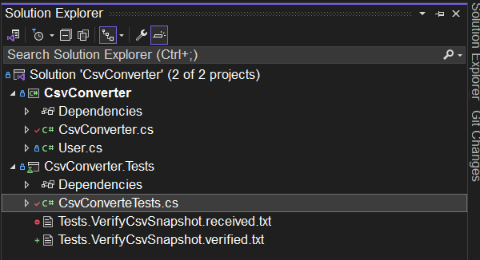
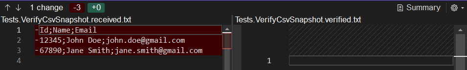
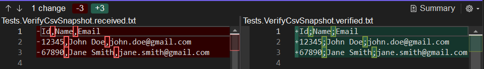

class: center, middle # Refactoring legacy code --- class: center, middle # What is legacy code? --- class: center, middle # Legacy is code is simply code without tests - Michael C. Feathers --- # Working Effectively with Legacy Code <div style="text-align: center;"> <img src="./assets/legacy-code-book.png" alt="Example Image", style="width: 550px;"> </div> --- class: center, middle # The million dollar quesion: # <span class="red-bg">How to test legacy code?</span> --- --- # Testing legacy code is simple 1. Identify changes points (Seams) 1. Break dependencies 1. Write tests - characetization tests - approval/snapshot tests - functional tests 1. Write tests for the to achieve ~100% code coverage and mutation score 1. Refactor the code ??? People are scared of legacy code because they don't know how to test it. But that's why you are all here, to learn the important bits of working with legacy softrware. --- # 1. Identify changes points - Seams Most legacy code is not testable The goal is to make it testable. <div style="text-align: center;" class="orange-bg"> Seams: a place to alter program behaviour, with minimal structural change </div> --- # 1. Identify changes points - Seams TODO: find example with overriding, then also show when we need to do small changes? Or not needed ``` public class OrderService { public decimal GetOrderTotal(int orderId) { var order = OrderApi.GetOrder(orderId); return order.Total; } } ``` --- # 1. Identify changes points - Seams ``` public class OrderService { public decimal GetOrderTotal(int orderId) { * var order = OrderApi.GetOrder(orderId); return order.Total; } } ``` --- # 2. Break dependencies Abstract away tightly-coupled dependency Inject a test double like mocks or stubs --- # 2. Break dependencies ``` public class OrderService { private readonly IOrderRepository _orderRepository; public OrderService(IOrderRepository orderRepository) { _orderRepository = orderRepository; } public decimal GetOrderTotal(int orderId) { var order = _orderRepository.GetOrder(orderId); return order.Total; } } ``` --- # 2. Break dependencies You don't always need to break dependencies at first Use real dependencies - if they are not that slow - crucial for the flow Break dependencies once everything is tested --- # 3. Characterization testing - WHY <div class="red-bg" style="text-align: center;"> Goal is not to find bugs </div> <br> <div class="green-bg" style="text-align: center;"> Goal is to understand the behaviours </div> --- # 3. Characterization tests - WHEN Code is too complex to know what it does Doesn't have any documnetation Has no tests --- # 3. Characterization tests - HOW 1. Create a test 2. Write a failing assertion 3. Execute the test to observe the actual behaviour of the system 4. Change the test that it expects the actual behaviour 5. Repeat until you understand the code well --- # 3. Characterization tests ``` public static string FormatText(string text) { var result = new StringBuilder(); for (int n = 0; n < text.Length; ++n) { char c = text[n]; if (c == '<') { while (n < text.Length && text[n] != '/' && text[n] != '>') n++; if (n < text.Length && text[n] == '/') n += 4; else n++; } if (n < text.Length) result.Append(text[n]); } return result.ToString(); } ``` --- # 1. Create a test ``` [Test] public void asd() { let formattedText = Pattern.FormatText("plain text"); } ``` --- # 2. Add failing assertion ``` [Test] public void asd() { let formattedText = Pattern.FormatText("plain text"); formattedText.Should().Be(null); } ``` --- # 2. Add failing assertion ``` [Test] public void asd() { let formattedText = Pattern.FormatText("plain text"); formattedText.Should().Be(null); } ``` # 3. Execute test to observe behaviour Error: ``` Expected formattedText to be <null>, but found "plain text". ``` --- # 4. Change the test Make it pass ``` [Test] public void asd() { let formattedText = Pattern.FormatText("plain text"); formattedText.Should().Be("plain text"); } ``` --- # 4. Change the test Capture behaviour ``` [Test] public void ShouldNotChangeUntaggedText() { let formattedText = Pattern.FormatText("plain text"); formattedText.Should().Be("plain text"); } ``` --- # 1. Create a test ``` [Test] public void asd() { let formattedText = Pattern.FormatText("<tag>TDD rocks</tag>"); } ``` --- # 2. Add failing assertion ``` [Test] public void asd() { let formattedText = Pattern.FormatText("<tag>TDD rocks</tag>"); formattedText.Should().Be(null); } ``` --- # 2. Add failing assertion ``` [Test] public void asd() { let formattedText = Pattern.FormatText("<tag>TDD rocks</tag>"); formattedText.Should().Be(null); } ``` # 3. Execute test to observe behaviour Error: ``` Expected formattedText to be <null>, but found "TDD rocks" ``` --- # 4. Change the test Make it pass ``` [Test] public void asd() { let formattedText = Pattern.FormatText("<tag>TDD rocks</tag>"); formattedText.Should().Be("TDD rocks"); } ``` --- # 4. Change the test Capture behaviour ``` [Test] public void ShouldRemoveOpeningAndClosingTagsFromText() { let formattedText = Pattern.FormatText("<tag>TDD rocks</tag>"); formattedText.Should().Be("TDD rocks"); } ``` --- # 1. Create a test ``` [Test] public void asd() { let formattedText = Pattern.FormatText("<>"); } ``` --- # 2. Add assertion ``` [Test] public void asd() { let formattedText = Pattern.FormatText("<>"); formattedText.Should().Be(""); } ``` --- # 2. Add assertion ``` [Test] public void asd() { let formattedText = Pattern.FormatText("<>"); formattedText.Should().Be(""); } ``` ## <span class="red-bg">But it passes</span> Is it a bug? Or feature? - Escalate the issue if necessary - Leave it there - we only document behaviour, no bug finding - Fix if you are 100% sure it's a bug --- # Approval/Snapshot testing Storing previously generated output Compare new output with the approved ones Easer than writing tons of assertions --- # Verify - .NET snapshot testing library Automatic file handling Customizeable comparison (f.e.: ignore fields) Supports multiple formats (JSON, XML, CSV, etc.) Human friendly diffs Powerfull integration with test runners --- # Use Verify in .NET ``` public class CsvConverter { private const char DefaultSeparator = ','; public Stream ConvertToCsv(IEnumerable<User> users) { var stream = new MemoryStream(); using (var writer = new StreamWriter(stream)) { writer.WriteLine($"Id{DefaultSeparator}Name{DefaultSeparator}Email"); foreach (var user in users) { var values = new[] { user.Id.ToString(), user.Name, user.Email }; writer.WriteLine(string.Join(DefaultSeparator, values)); } } stream.Position = 0; return stream; } } ``` --- # Use Verify in .NET ``` [Test] public async Task VerifyCsvSnapshot() { // Arrange var users = new List<User> { new User { Id = 12345, Name = "John Doe", Email = "john.doe@gmail.com" }, new User { Id = 67890, Name = "Jane Smith", Email = "jane.smith@gmail.com" } }; // Act using var csvStream = new CsvConverter().ConvertToCsv(users); using var reader = new StreamReader(csvStream); var csvContent = await reader.ReadToEndAsync(); // Assert await Verifier.Verify(csvStream); } ``` --- # Use Verify in .NET <div style="text-align: center;">  </div> --- # Use Verify in .NET <div style="text-align: center;">  </div> --- # Use Verify in .NET ``` public class CsvConverter { * private const char DefaultSeparator = ';'; private const char DefaultSeparator = ','; public Stream ConvertToCsv(IEnumerable<User> users) { ... } } ``` --- # Use Verify in .NET <div style="text-align: center;">  </div> --- # Functional testing Add more tests: 1. Use code coverage tool 2. Add functional tests 3. Execute Mutation Testing (manually is also fine) 4. Repeat till 100% code coverage and mutation score --- # Put thees in exercise: - calling database - doing read and write - calling a 3rd party email sending service - create a CVS file - capture some temp output with approval testing ---- have separation date format config, hardcoded ---